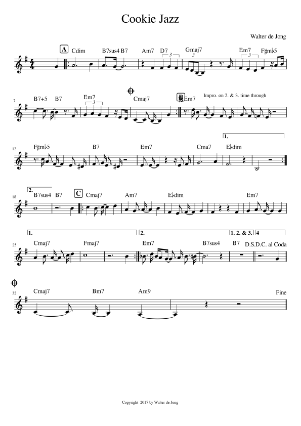

https://editor.drawthedots.com/?t=X%3A1%0AC%3AWalter%20de%20Jong%0AZ%3ACopyright%20%202017%20by%20Walter%20de%20Jong%0AL%3A1%2F16%0AM%3A4%2F4%0AI%3Alinebreak%20%24%0AK%3AG%0AV%3A1%20treble%20nm%3D%22SI-Electric%20Piano%201%22%0AV%3A1%0A%20x12%20G4%20%7C%3A%22Cdim%22%22%5EA%22%20A12%20B4%20%7C%22B7sus4%22%20A2%3EG2-%22B7%22%20G12%20%7C%22Am7%22%20z4%20F4%22D7%22%20(3F4%20G4%20F4%20%7C%20%254%0A%22Gmaj7%22%20(3E2D2B%2C2-%20B%2C4%20z4%20z3%20G%20%7C%22Em7%22%20(3F4%20E4%20D4%22F%23mb5%22%20F4%20z%20A2B%20%7C%22B7%235%22%20c4-%20c3%20B-%22B7%22%20B4%20z3%20F%20%7C%20%257%0A%22Em7%22%20(3G4%20A4%20G4%20F4%20z%20E2D%20%7CO%22Cmaj7%22%20C4-%20C3%20B%2C-%20B%2C4%20G4%20%3A%7C%20%259%0AS%22Em7%22%22%5EB%22%20z3%20d%20B3%22%5EImpro.%20on%202.%20%26%203.%20time%20through%22%20G-%20G4%20F3%20E%20%7C%20G3%20F%20%3DF3%20E%20z8%20%7C%20%2511%0A%22F%23mb5%22%20z3%20c%20A3%20F-%20F4%20E3%20%5ED%20%7C%22B7%22%20F3%20G%20E3%20%5ED%20z8%20%7C%22Em7%22%20E3%20E-%20E4%20z4%20z%20E2%20F%20%7C%22Cmaj7%22%20G12%20A4%20%7C1%20%2515%0A%22Ebdim%22%20F12%20z4%20%7C%20B%2C8%20z8%20%3A%7C2%22B7sus4%22%20B16%20%7C%7C%22B7%22%20z12%20B4%20%7C%3A%22Cmaj7%22%22%5EC%22%20c4%20B3%20c-%20c4%20d4%20%7C%20%2520%0A%22Am7%22%20A4%20G3%20A-%20A4%20B4%20%7C%22Ebdim%22%20F4%20E3%20F-%20F4%20G4%20%7C%20F4%20z4%20z4%20F4%20%7C%22Em7%22%20G4%20A3%20G-%20G4%20G4%20%7C1%20%2524%0A%22Cmaj7%22%20A4%20B3%20A-%20A3%20c%20d4%20%7C%22Fmaj7%22%20c16%20%7C%20z12%20B4%20%3A%7C2%22Em7%22%20_B3%20d%20BA2G-%20G3%20A%20B3%20%3DB-%20%7C%20%2528%0A%22B7sus4%22%20B12%20z4%20%7C%7C1%22B7%22%20z16!D.S.!%20%7C%7C2%20z12%20G4!D.C.!%20%7C%7CO%22Cmaj7%22%20C4-%20C3%22Bm7%22%20B%2C-%20B%2C4%22Am9%22%20A%2C4-%20%7C%20%2532%0A%20A%2C4%20z4%20z8!fine!%20%7C%7C%20%2533
ABC Notation
X:1
C:Walter de Jong
Z:Copyright 2017 by Walter de Jong
L:1/16
M:4/4
I:linebreak $
K:G
V:1 treble nm="SI-Electric Piano 1"
V:1
x12 G4 |:"Cdim""^A" A12 B4 |"B7sus4" A2>G2-"B7" G12 |"Am7" z4 F4"D7" (3F4 G4 F4 | %4
"Gmaj7" (3E2D2B,2- B,4 z4 z3 G |"Em7" (3F4 E4 D4"F
"Em7" (3G4 A4 G4 F4 z E2D |O"Cmaj7" C4- C3 B,- B,4 G4 :| %9
S"Em7""^B" z3 d B3"^Impro. on 2. & 3. time through" G- G4 F3 E | G3 F =F3 E z8 | %11
"F
"Ebdim" F12 z4 | B,8 z8 :|2"B7sus4" B16 ||"B7" z12 B4 |:"Cmaj7""^C" c4 B3 c- c4 d4 | %20
"Am7" A4 G3 A- A4 B4 |"Ebdim" F4 E3 F- F4 G4 | F4 z4 z4 F4 |"Em7" G4 A3 G- G4 G4 |1 %24
"Cmaj7" A4 B3 A- A3 c d4 |"Fmaj7" c16 | z12 B4 :|2"Em7" _B3 d BA2G- G3 A B3 =B- | %28
"B7sus4" B12 z4 ||1"B7" z16!D.S.! ||2 z12 G4!D.C.! ||O"Cmaj7" C4- C3"Bm7" B,- B,4"Am9" A,4- | %32
A,4 z4 z8!fine! || %33
How to:
(in Documents\MuseScore\Scores folder)
- Get a single part e.g. drag midi track from cakewalk to desktop
- (if > 1 part) Select. Save selected part as separate mscz in MuseScore 4
- Open, Select all, export to musicxml (uncompressed)
- Convert musicxml to abc by opening musicxml in Michael Eskin's ABC Tools
https://michaeleskin.com/abctools/abctools.html
or https://wim.vree.org/js/xml2abc-js.html
- From site below:
1) get link with encoded abc that opens the dots. (used above)
2) screen capture score and save as png in songbook folder
abcjs editor https://www.abcjs.net/abcjs-editor.html
(or abcjs: Quick Editor (drawthedots.com) https://editor.drawthedots.com/)